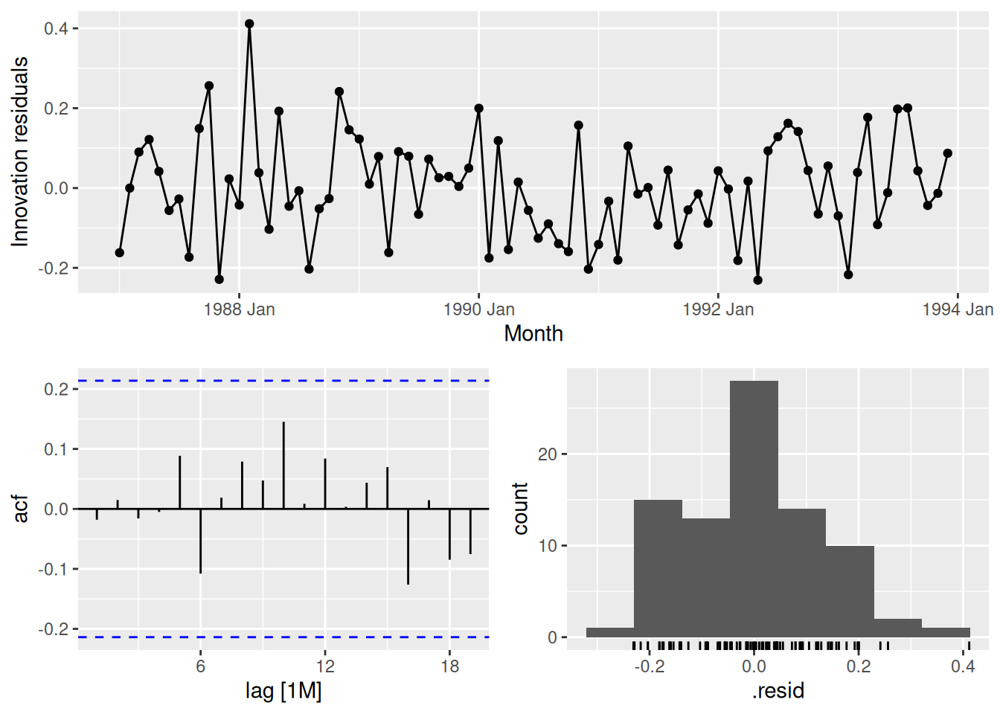
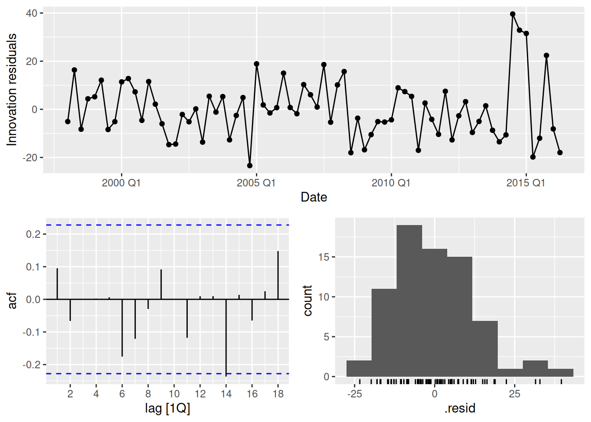
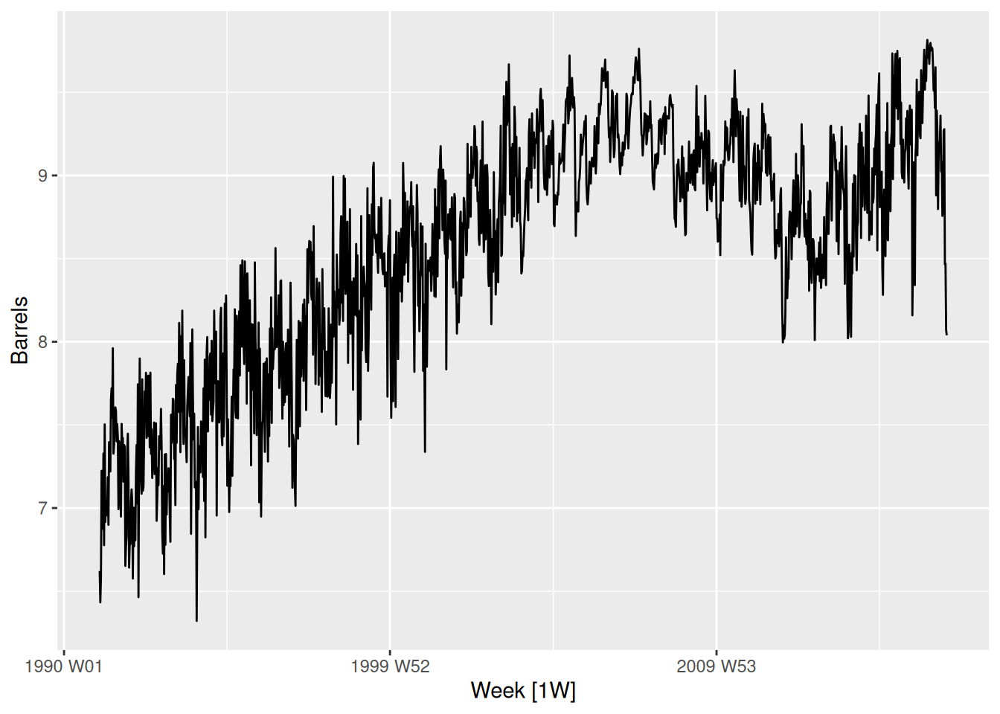
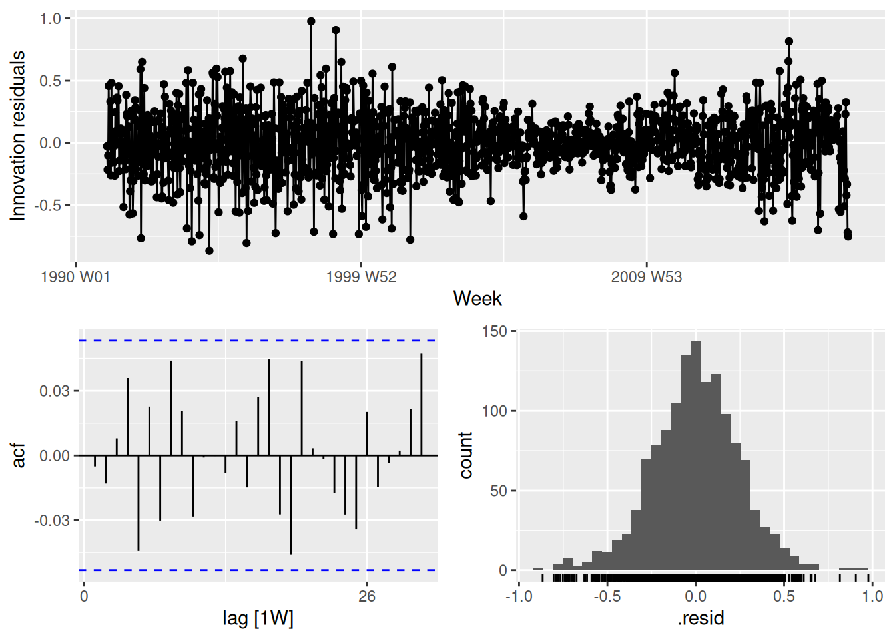
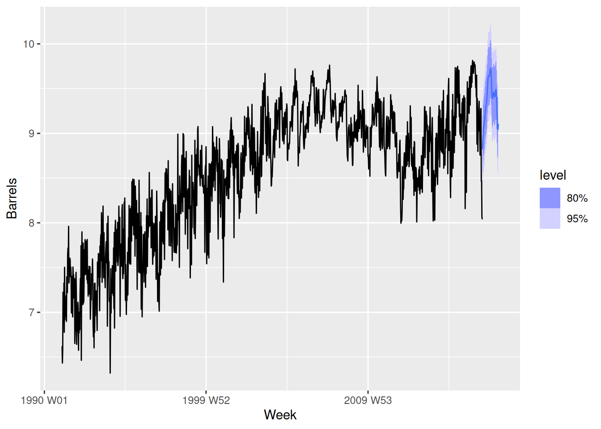

Check the residuals of the fitted model to ensure the ARIMA process has adequately addressed the autocorrelations seen in the TSLM model.
fit |>select(dynreg) |>gg_tsresiduals()

These look fine.
fpp3 10.7, Ex 3
Repeat the daily electricity example, but instead of using a quadratic function of temperature, use a piecewise linear function with the “knot” around 25 degrees Celsius (use predictors Temperature & Temp2). How can you optimize the choice of knot?
Now we will use that ARIMA(3,1,1)(2,0,0)[7] model and modify the knot until the AICc is optmized.
To optimize the knot position, we need to try many knot locations and select the model with the smallest AICc value. The fit is sensitive to the knot placement, with errors occurring at some knot locations. So we need to do a grid search, allowing for null models to be returned.
augment(best_model) |>features(.innov, ljung_box, dof =6, lag =21)
# A tibble: 1 × 3
.model lb_stat lb_pvalue
<chr> <dbl> <dbl>
1 fit 31.1 0.00841
The model fails the residual tests but the significant autocorrelations are relatively small, so it should still give reasonable forecasts. The residuals look like they have some heteroskedasticity, but otherwise look ok.
This exercise concerns aus_accommodation: the total quarterly takings from accommodation and the room occupancy level for hotels, motels, and guest houses in Australia, between January 1998 and June 2016. Total quarterly takings are in millions of Australian dollars. a. Compute the CPI-adjusted takings and plot the result for each state
For each state, fit a dynamic regression model of CPI-adjusted takings with seasonal dummy variables, a piecewise linear time trend with one knot at 2008 Q1, and ARIMA errors.
fit <- aus_accommodation |>model(ARIMA(adjTakings ~season() +trend(knot =yearquarter("2008 Q1"))) )fit
# A mable: 8 x 2
# Key: State [8]
State ARIMA(adjTakings ~ season() + trend(knot = year…¹
<chr> <model>
1 Australian Capital Territory <LM w/ ARIMA(1,0,0) errors>
2 New South Wales <LM w/ ARIMA(1,0,0)(0,0,1)[4] errors>
3 Northern Territory <LM w/ ARIMA(0,0,1)(1,0,0)[4] errors>
4 Queensland <LM w/ ARIMA(1,0,0)(0,0,1)[4] errors>
5 South Australia <LM w/ ARIMA(1,0,0)(1,0,0)[4] errors>
6 Tasmania <LM w/ ARIMA(0,0,1)(1,0,0)[4] errors>
7 Victoria <LM w/ ARIMA(1,0,0)(0,0,1)[4] errors>
8 Western Australia <LM w/ ARIMA(1,0,0) errors>
# ℹ abbreviated name:
# ¹`ARIMA(adjTakings ~ season() + trend(knot = yearquarter("2008 Q1")))`
The seasonal dummy variable has not adequately handled the seasonality, so there are seasonal ARIMA components.
Check that the residuals of the model look like white noise.
fit |>filter(State =="Victoria") |>gg_tsresiduals()

No apparent problems. Similar plots needed for the other states.
Forecast the takings for each state to the end of 2017. (Hint: You will need to produce forecasts of the CPI first.)
# A fable: 48 x 7 [1Q]
# Key: State, .model [8]
State .model Date
<chr> <chr> <qtr>
1 Australian Capital Territory "ARIMA(adjTakings ~ season() + trend(kn… 2016 Q3
2 Australian Capital Territory "ARIMA(adjTakings ~ season() + trend(kn… 2016 Q4
3 Australian Capital Territory "ARIMA(adjTakings ~ season() + trend(kn… 2017 Q1
4 Australian Capital Territory "ARIMA(adjTakings ~ season() + trend(kn… 2017 Q2
5 Australian Capital Territory "ARIMA(adjTakings ~ season() + trend(kn… 2017 Q3
6 Australian Capital Territory "ARIMA(adjTakings ~ season() + trend(kn… 2017 Q4
7 New South Wales "ARIMA(adjTakings ~ season() + trend(kn… 2016 Q3
8 New South Wales "ARIMA(adjTakings ~ season() + trend(kn… 2016 Q4
9 New South Wales "ARIMA(adjTakings ~ season() + trend(kn… 2017 Q1
10 New South Wales "ARIMA(adjTakings ~ season() + trend(kn… 2017 Q2
# ℹ 38 more rows
# ℹ 4 more variables: adjTakings <dist>, .mean <dbl>, CPI <dbl>, Takings <dist>
What sources of uncertainty have not been taken into account in the prediction intervals?
The uncertainty in the CPI forecasts has been ignored.
As usual, the estimation of the parameters and the choice of models have also not been accounted for.
fpp3 10.7, Ex 5
We fitted a harmonic regression model to part of the us_gasoline series in Exercise 6 in Section 7.10. We will now revisit this model, and extend it to include more data and ARMA errors.
Using TSLM(), fit a harmonic regression with a piecewise linear time trend to the full gasoline series. Select the position of the knots in the trend and the appropriate number of Fourier terms to include by minimising the AICc or CV value.
Let’s optimize using 2 break points and an unknown number of Fourier terms. Because the number of Fourier terms is integer, we can’t just use optim. Instead, we will loop over a large number of possible values for the breakpoints and Fourier terms. There are more than 2000 models fitted here, but TSLM is relatively fast.
Note that the possible values of the knots must be restricted so that knot2 is always much larger than knot1. We have set them to be at least 2 years apart here.
us_gasoline |>autoplot(Barrels)

# Function to compute CV given K and knots.get_cv <-function(K, knot1, knot2) { us_gasoline |>model(TSLM(Barrels ~fourier(K = K) +trend(c(knot1, knot2)))) |>glance() |>pull(CV)}models <-expand.grid(K =seq(25),knot1 =yearweek(as.character(seq(1991, 2017, 2))),knot2 =yearweek(as.character(seq(1991, 2017, 2)))) |>filter(knot2 - knot1 >104) |>as_tibble()models <- models |>mutate(cv = purrr::pmap_dbl(models, get_cv)) |>arrange(cv)# Best combination(best <-head(models, 1))
Check the residuals of the final model using the gg_tsdisplay() function and a Ljung-Box test. Do they look sufficiently like white noise to continue? If not, try modifying your model, or removing the first few years of data.
gg_tsresiduals(fit)

augment(fit) |>features(.innov, ljung_box, dof =2, lag =24)
The model looks pretty good, although there is some heteroskedasticity. So the prediction intervals may not have accurate coverage.
Once you have a model with white noise residuals, produce forecasts for the next year.
fit |>forecast(h ="1 year") |>autoplot(us_gasoline)

fpp3 10.7, Ex 6
Electricity consumption is often modelled as a function of temperature. Temperature is measured by daily heating degrees and cooling degrees. Heating degrees is 18^\circC minus the average daily temperature when the daily average is below 18^\circC; otherwise it is zero. This provides a measure of our need to heat ourselves as temperature falls. Cooling degrees measures our need to cool ourselves as the temperature rises. It is defined as the average daily temperature minus 18^\circC when the daily average is above 18^\circC; otherwise it is zero. Let y_t denote the monthly total of kilowatt-hours of electricity used, let x_{1,t} denote the monthly total of heating degrees, and let x_{2,t} denote the monthly total of cooling degrees.
An analyst fits the following model to a set of such data: y^*_t = \beta_1x^*_{1,t} + \beta_2x^*_{2,t} + \eta_t, where (1-\Phi_{1}B^{12} - \Phi_{2}B^{24})(1-B)(1-B^{12})\eta_t = (1+\theta_1 B)\varepsilon_t and y^*_t = \log(y_t), x^*_{1,t} = \sqrt{x_{1,t}} and x^*_{2,t}=\sqrt{x_{2,t}}.
What sort of ARIMA model is identified for \eta_t?
ARIMA(0,1,1)(2,1,0)_{12}
The estimated coefficients are
Parameter
Estimate
s.e.
Z
P-value
\beta_1
0.0077
0.0015
4.98
0.000
\beta_2
0.0208
0.0023
9.23
0.000
\theta_1
0.5830
0.0720
8.10
0.000
\Phi_{1}
-0.5373
0.0856
-6.27
0.000
\Phi_{2}
-0.4667
0.0862
-5.41
0.000
Explain what the estimates of \beta_1 and \beta_2 tell us about electricity consumption.
b_1 is the unit increase in y_t^* when x_{1,t}^* increases by 1. This is a little hard to interpret, but it is clear that monthly total electricity usage goes up when monthly heating degrees goes up. Similarly, for b_2, monthly total electricty usage goes up when monthly cooling degrees goes up.
Write the equation in a form more suitable for forecasting.
This turned out to be way more messy than I expected, but for what it’s worth, here it is in all its ugliness.
Describe how this model could be used to forecast electricity demand for the next 12 months.
For t=T+1, we use the above equation to find a point forecast of y_{T+1}^*, setting \varepsilon_{T+1}=0 and \hat{\varepsilon}_T to the last residual. The actual y_t^* values are all known, as are all the x_{1,t}^* and x_{2,t}^* values up to time t=T. For x_{1,T+1}^* and x_{2,T+1}^*, we could use a forecast (for example, a seasonal naive forecast).
For t=T+2,\dots,T+12, we do something similar, but both \varepsilon values are set to 0 and y^*_{T+k} (k\ge1) is replaced by the forecasts just calculated.
Explain why the \eta_t term should be modelled with an ARIMA model rather than modelling the data using a standard regression package. In your discussion, comment on the properties of the estimates, the validity of the standard regression results, and the importance of the \eta_t model in producing forecasts.
The non-stationarity of \eta_t means the coefficients in the regression model will be inconsistent if OLS is used.
The standard errors will be incorrectly computed.
Which means all the p-values will be wrong.
Using an ARIMA structure for \eta_t allows these problems to be corrected, plus the short-term forecasts will be more accurate.